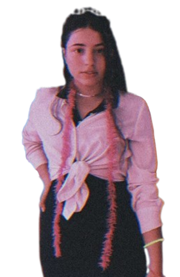
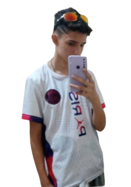
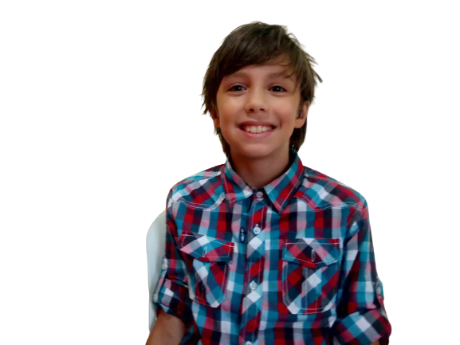
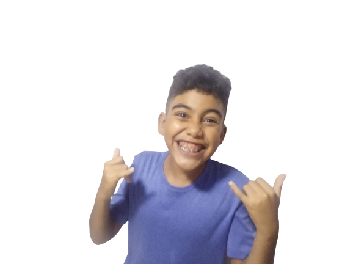
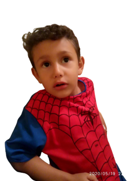

Conheça Nosso Atores

Ator, diretor, editor, roterista, gravador, produtor e fundador da Rafilo Produções além de ser humorista e programador. Rafilo Lemos de 18 anos, apareceu em diversas produções de sua empresa, apesar de preferir ficar por trás dos bastidores de cada série e filme, Rafilo também fez bastantes aparições, como o mordomo em Mistério na Mansão Norwich, o Padre no clipe Sonhei que tava me casando. Rafilo começou a empresa como um hobby juntamente com seu primo Luiz mas depois começou a levar a sério e agora acumula diversos títulos inclusive do desenvolvedor desta plataforma.
InstagramCoprodutor, ator e cofundador da Rafilo ProduçõesLuiz começou a empresa junto com Rafilo, gravando desde pequenos grandes histórias produzidas por eles Luiz foi ator principal de Mistério na Mansão Norwich e coestrelou Xeque Mate com João Paulo, também foi o ator principal junto com Ana Beatriz dos 2 clipes da produtora.
Instagram Atriz da produtora desde as primeiras produções Ana Beatriz fez parte da primeira geração de atores ajudou a produzir diversos clipes e séries, e também estrelou Mistério na Mansão Norwich e os clipes com o Luiz, apesar de quase sempre atuar como namorada ou esposa de Luiz, eles são primos e nunca passou disso. Ana Beatriz deixou a produtora após a série da mansão Norwich pra focar em outros projetos.
InstagramAna Catarina, mais conhecida como aninha, trabalhou na Rafilo Produções apenas como Valentina em Mistério na Mansão Norwich, apesar de ter ganhado bastante destaque por sua participação na série, Aninha resolveu não prosseguir na produtora, assim como Ana Beatriz, saiu após a série para focar em projetos pessoais.
Instagram Assim, como sua irmã Aninha, Miguel atuou na Rafilo Produções apenas em um papel, o de Germano na série Mistério na Mansão Norwich, além de atuar na série, ele também ajudou a gravar produzir e roterizar a produção, mesmo tendo bastante sucesso e recebendo diversas propostas do Rafilo, Miguel resolveu não continuar na empresa.
Assim como seus irmãos, Mateus recebeu o convite pra participar de "Mistério na Mansão Norwich" do próprio Rafilo, e prontamente aceitou, apesar de ter se identificado bastante com o restante do elenco, e com as produções Mateus que fez o personagem "Rato" na série, decidiu sair da Rafilo Produções logo após o cancelamento da série.
O primeiro ator da nova geração, André começou na Rafilo Produções com pequenas aparições, mas depois de se destacar mesmo dentre os mais experientes, acabou conquistando espaço no elenco principal e estreou as maiores produções da empresa. Participou como personagem secundário de Mistério na Mansão Norwich, após desempenhar um excelente papel, estreou o musical "Meu amigo Garfinho", e foi o principal e líder do Trio Temporal, além disse acumula outras pequenas aparições. André continua na produtora, e foi cotado para 3 dos 5 futuros projetos que estão em desenvolvimento.
Um dos mais novos do elenco de atores, mas também um dos mais dedicados, João Paulo começou em pequenas aparições, e seu primeiro papel importante foi em "O Trio Temporal", coestrelando com André e Samuel, João sempre demonstrou bastante interesse pela Rafilo Produções, e em todas as produções mesmo que não atuando ele ajuda. Está cotado para estrelar os próximos 2 flmes da produtora, e renovou o contrato recentemente para mais 7 produções.
Outro ator da nova geração, Samuel começou a convite de Rafilo para participar do filme "Jornada até o título", mas depois de ter gostado do seu perfil, Rafilo o convidou para estrelar ao lado de João Paulo e André a série de mais sucesso da produtora "O Trio Temporal", apesar de não ter aparecido nas recentes produções, Samuel está cotado para estrelar o próximo filme e a expectativa de uma renovação de contrato está muito boa.
Gabriel Gonçalves foi indicado por João para atuar e Rafilo após uma pequena avaliação, o escolheu para estrelar o spin-off "A Dupla do Tempo"Gabriel já renovou o contrato e permanece na produtora por tempo indeterminado e vem se destacando bastante.
Também por indicação de João, Gustavo foi indicado para estrelar a série "A Dupla do Tempo", e desde então se firmou na produtora, depois das grandes baixas dos atores mais velhos, os atores mirims vem sendo essenciais para produtora, a nova geração deu uma nova cara as produções abordando temas mais complexos e fictícios, e Gustavo é um dos que tem ajudado a empresa.
Gabriel foi convidado por Rafilo pra fazer uma pequena participação em O Trio Temporal e por enquanto foi sua única participação, mas está negociando mais papéis na produtora e pode se firmar como um dos atores principais.